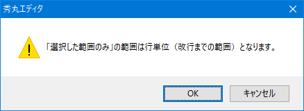

- 検索／置換の「選択した範囲内のみ」の動作がちょっと変な感じがしますが？。 時々、ダイアログの「選択した範囲内のみ」チェックボックスがグレーになって変更不可になったり、 選択した範囲より少し外側まで検索／置換されたりするようです。

「選択した範囲内のみ」チェックボックスが有効になるのは、範囲選択している場合だけです。
現時点（秀丸エディタ Ver.8.83）では、検索／置換の「選択した範囲内のみ」の機能は秀丸エディタ内部の構造上、 論理行（改行までを１行と数える）単位になっています。
例えば、選択範囲の始まりが行頭でない場合、検索／置換の開始場所は選択範囲の始まりの場所の行の行頭になります。 また同様に、検索／置換の終わりは選択範囲の終わりの行の行末になります。
その為、範囲選択した箇所と一致しない場合があります。選択範囲の始まりが行頭でない/選択範囲の終わりが行末でない状態で「選択した範囲内のみ」をONにし、 検索を実行した場合は、範囲は行単位になると、メッセージが表示されます。

- [補足]
マクロの検索系文で使用する「inselect」オプションは、複数行の選択でなくても有効です。 行内の一部分のみを選択していても、範囲を拡張して1行を選択した状態で実行されます。
検索の範囲を任意に指定したい場合は、「カラーマーカー」を使います。
「第II部〜知っていると便利な秀丸の機能」の「検索」-「「追加の条件」について」を参照してください。